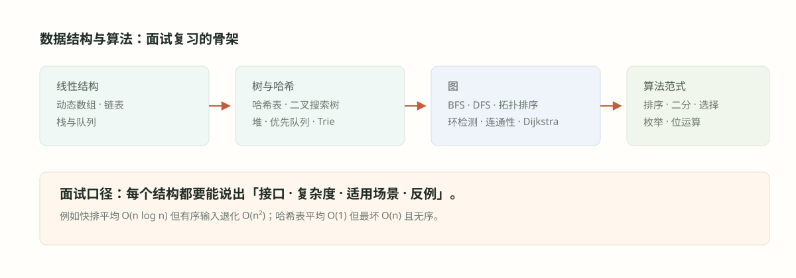

#005. 图论 I：图的表示、BFS 与 DFS

#学习目标
图（graph）\(G = (V, E)\) 是最一般的离散关系模型：顶点集合 \(V\)、边集合 \(E\)，边可以有方向（有向图）也可以没有（无向图），社交网络、依赖关系、状态转移、网格地图全都是图。前四章的结构都是它的特例——链表是一维链、二叉树是带父子序的无环图，而图把「每个节点可以有任意多个邻居、还可能绕回来」这件事彻底放开。
一旦放开，第一件事是决定「图在内存里长什么样」（表示），第二件事是掌握两个遍历骨架：BFS（广度优先，用队列，按层扩散，天然回答「最少几步」）与 DFS（深度优先，用栈或递归，一头走到黑再回溯，天然回答「连通、路径、存在性」）。几乎所有图题都是「选表示 + 套两个骨架之一 + 按题意维护额外信息」。006 章的拓扑排序、环检测、连通分量，全部建立在本章的 BFS/DFS 代码之上。
邻接表省空间但查一条边要扫邻居表；邻接矩阵查边 \(\Theta(1)\) 但空间 \(\Theta(V^2)\)。稀疏图用表，稠密图用矩阵。
队列先进先出 ⇒ 按距离分层扩展 ⇒ 无权图上首次到达即最短边数。层序遍历（003 章）就是树上的 BFS。
栈式深入 ⇒ 沿一条路走到底再回溯 ⇒ 天然记录路径、划分连通块、做拓扑与判环（006 章）。
#图的两种表示：邻接表与邻接矩阵
顶点编号 \(0..|V|-1\)。邻接表（adjacency list）：数组 adj，adj[u] 存 u 的所有邻居；无向边 (u,v) 在两边各存一次。邻接矩阵（adjacency matrix）：\(|V| \times |V|\) 的二维数组，a[u][v] 为 1（或边权）表示有边。两者的账放在一张表里：
| 维度 | 邻接表 | 邻接矩阵 |
|---|---|---|
| 空间 | \(\Theta(V + E)\) | \(\Theta(V^2)\) |
| 查询边 (u,v) 是否存在 | \(\Theta(\deg u)\) | \(\Theta(1)\) |
| 枚举 u 的所有邻居 | \(\Theta(\deg u)\) | \(\Theta(V)\)（要扫全行） |
| 遍历全图 | \(\Theta(V + E)\) | \(\Theta(V^2)\) |
| 适用 | 稀疏图（\(E \ll V^2\)），刷题默认 | 稠密图、需要 \(O(1)\) 点查边权 |
刷题的默认选择是邻接表，因为大多数图的 \(E\) 远小于 \(V^2\)，矩阵的 \(V^2\) 空间与 \(V^2\) 遍历时间都是浪费。建表代码是所有图题的第一段：
#include <vector>
std::vector<std::vector<int>> makeAdj(int n,
const std::vector<std::vector<int>>& edges) {
std::vector<std::vector<int>> adj(n); // adj[u]：u 的邻居表
for (const auto& e : edges) {
adj[e[0]].push_back(e[1]);
adj[e[1]].push_back(e[0]); // 无向边要加两次
}
return adj; // 有向图只保留第一句 push_back
}例题用的「岛屿」网格不需要真的建邻接表：每个格子是顶点，上下左右四个格子是邻居——邻居关系由方向数组隐式给出，越界检查代替了邻居表。这是把图算法落到二维网格上的标准翻译，面试时要能显式说出这个对应。
#BFS：按层扩散与最短边数
广度优先搜索（breadth-first search，BFS）从起点出发，先访问所有距离为 1 的顶点，再距离为 2 的，逐层外扩——数据结构上是「队列 + 入队时标记」。为什么是入队时标记而不是出队时？因为同一顶点可能作为多个已访问顶点的邻居被多次发现，出队才标记会让它反复入队，队列膨胀、时间退化；入队即标记保证每个顶点恰好入队一次。
#include <vector>
#include <queue>
std::vector<int> bfs(const std::vector<std::vector<int>>& adj, int src) {
std::vector<int> dist(adj.size(), -1); // -1 表示未到达
std::queue<int> q;
dist[src] = 0; // 起点先标距离再入队
q.push(src);
while (!q.empty()) {
int u = q.front(); q.pop();
for (int v : adj[u])
if (dist[v] == -1) { // 入队时标记，保证只进一次
dist[v] = dist[u] + 1; // 层数 = 距离 + 1
q.push(v);
}
}
return dist; // dist[v] = src 到 v 的最短边数
}最短性是 BFS 的灵魂性质：无权图上，BFS 首次到达某顶点所走的边数就是起点到它的最短边数。论证用归纳：距离为 0 的只有起点自身；归纳假设「第 \(d\) 层的顶点距离恰为 \(d\)」——任何距离为 \(d+1\) 的顶点必有一个距离为 \(d\) 的邻居，它必然在第 \(d\) 层处理时被发现并赋值 \(d+1\)，不可能更晚（也不会更早，因为更早的层只能给出更大的距离）。于是 dist 数组就是精确的最短边数答案。若边带长度不一，这个性质失效，要换 Dijkstra 的思想（006 章）。
复杂度：邻接表上每个顶点入队一次、每条边被两端各扫一次，\(\Theta(V + E)\)；空间是队列与 dist，最坏 \(\Theta(V)\)。树的层序遍历与本章 BFS 是同一份代码去掉 visited（树无环不会重入）。
#DFS：深入、回溯与连通块
深度优先搜索（depth-first search，DFS）沿一条路走到没有未访问邻居为止，再回溯到最近的分叉口换路。递归版的调用栈就是「回来的路」：
#include <vector>
void dfs(int u, const std::vector<std::vector<int>>& adj,
std::vector<bool>& vis) {
vis[u] = true; // 进入即标记
for (int v : adj[u])
if (!vis[v]) dfs(v, adj, vis); // 未访问的邻居继续深入
}递归版最优雅，但递归深度等于图中最长简单路径，网格题里行数乘列数到十万级就会栈溢出——面试常追问「递归爆栈怎么办」，答案是把栈显式化。提纲同样要求 DFS 的双实现，显式栈版要自己管理「当前节点探索到哪个邻居」：
#include <vector>
void dfsIter(int src, const std::vector<std::vector<int>>& adj,
std::vector<bool>& vis) {
std::vector<int> st{src};
vis[src] = true;
while (!st.empty()) {
int u = st.back();
bool advanced = false;
for (int v : adj[u])
if (!vis[v]) { // 找到第一个未访问邻居
vis[v] = true; // 压栈即标记，防重复入栈
st.push_back(v); // 深入一步
advanced = true;
break;
}
if (!advanced) st.pop_back(); // 邻居耗尽，回溯
}
}两版的访问顺序可能不同（显式栈版每次回到栈顶重新扫邻居表，整体仍是深度优先），但对「遍历哪些点、划分哪些块」这类与顺序无关的问题，两者等价。DFS 的两个直接产物：连通块划分——对每个未访问顶点启动一次 DFS，一次调用染尽一个块（计数的完整实现见006 章例题）；路径记录——递归栈（或显式栈内容）本身就是一条从起点到当前点的简单路径，迷宫找路、图的割点桥边都从这个观察出发。
问「最少几步 / 最短」→ BFS（按层到达即最短）；问「连不连通 / 有没有路径 / 存在性」→ DFS（写起来短）；需要「处理顺序满足依赖关系」→ DFS 的完成序（006 章拓扑排序）。两者复杂度同为 \(\Theta(V+E)\)，选择依据是性质而不是复杂度。
#例题详解
例题 1：岛屿数量。二维网格中 1 是陆地、0 是水，上下左右相邻的 1 组成一座岛，求岛的个数。
建模。把每个 1 格子看成顶点，四相邻的 1 格子之间有边——岛就是无向图的连通分量，答案就是连通分量个数。DFS 每启动一次「沉掉」一整块：扫全网格，遇到未处理的 1 就计数加一并从该格 DFS，把整块连通的 1 全部改成 0（原地标记代替 visited 数组，即「沉岛」技巧）。
代码。
#include <vector>
void sink(std::vector<std::vector<char>>& g, int r, int c) {
if (r < 0 || r >= (int)g.size() ||
c < 0 || c >= (int)g[0].size())
return; // 越界即回
if (g[r][c] != '1') return; // 水 or 已访问
g[r][c] = '0'; // 原地标记，替代 visited
sink(g, r + 1, c); // 四方向扩散
sink(g, r - 1, c);
sink(g, r, c + 1);
sink(g, r, c - 1);
}
int numIslands(std::vector<std::vector<char>>& grid) {
int rows = (int)grid.size();
int cols = rows ? (int)grid[0].size() : 0;
int count = 0;
for (int r = 0; r < rows; ++r)
for (int c = 0; c < cols; ++c)
if (grid[r][c] == '1') { // 每发现一块新陆地
++count; // 新连通块计数
sink(grid, r, c); // 把整块连通陆地沉掉
}
return count;
}数值演示。网格
1 1 0 0 0
1 1 0 0 0
0 0 1 0 0
0 0 0 1 1扫到 (0,0) 计 1 座并沉掉左上 2×2 块；扫到 (2,2) 计 2 座；扫到 (3,3) 计 3 座并沉掉 (3,3)(3,4)。答案 3。
复杂度。时间 \(\Theta(RC)\)：每格至多被 sink 访问常数次（改 0 后不再进入）。空间 \(O(RC)\) 最坏（全陆地时递归深度）。
边界。空网格与全水（返回 0）；全陆地（返回 1，但递归最深，正是例题 2 显式栈版的动机）；「是否允许修改输入」要向面试官声明——不允许就用等大的 visited 数组，机制完全相同。
面试怎么讲。第一句话先说「岛 = 无向图连通分量，网格的隐式邻接表由四方向给出」，把图论对应讲明，再写沉岛 DFS；主动提「改输入是否允许」这一工程细节是加分项。
例题 2：同一道岛屿数量，改用 BFS 与显式栈 DFS 实现（递归爆栈的对策）。
建模。与例题 1 同型，仅遍历实现不同——这正对应提纲「递归与迭代双实现」的要求。BFS 用队列按层沉岛；显式栈 DFS 用 vector 当栈，行为深度优先。两者的连通块答案必然一致，因为「一次启动染尽一个块」与访问顺序无关。
代码（BFS 版）。
#include <vector>
#include <queue>
#include <utility>
void sinkBFS(std::vector<std::vector<char>>& g, int r0, int c0) {
std::queue<std::pair<int,int>> q;
g[r0][c0] = '0'; // 入队前标记
q.push({r0, c0});
const int dr[] = {1, -1, 0, 0}, dc[] = {0, 0, 1, -1};
while (!q.empty()) {
auto [r, c] = q.front(); q.pop();
for (int k = 0; k < 4; ++k) {
int nr = r + dr[k], nc = c + dc[k];
if (nr < 0 || nr >= (int)g.size() ||
nc < 0 || nc >= (int)g[0].size() || g[nr][nc] != '1')
continue;
g[nr][nc] = '0'; // 入队时沉岛，防重复入队
q.push({nr, nc});
}
}
}代码（显式栈 DFS 版）。
#include <vector>
#include <utility>
void sinkStack(std::vector<std::vector<char>>& g, int r0, int c0) {
std::vector<std::pair<int,int>> st{{r0, c0}};
g[r0][c0] = '0';
const int dr[] = {1, -1, 0, 0}, dc[] = {0, 0, 1, -1};
while (!st.empty()) {
auto [r, c] = st.back(); st.pop_back();
for (int k = 0; k < 4; ++k) {
int nr = r + dr[k], nc = c + dc[k];
if (nr < 0 || nr >= (int)g.size() ||
nc < 0 || nc >= (int)g[0].size() || g[nr][nc] != '1')
continue;
g[nr][nc] = '0'; // 压栈即标记
st.push_back({nr, nc});
}
}
}数值演示。在例题 1 的 4×5 网格上三种实现的计数过程完全一致（3 座），差别只在同一块内部被访问的次序：递归 DFS 与栈 DFS 是深度序（先一路向某方向走到底），BFS 是按离起点的层数序。
复杂度。两版时间均 \(\Theta(RC)\)、空间均 \(O(RC)\) 最坏，但栈深度风险消失：递归版的调用栈由系统管理且通常只有 MB 级上限，显式栈与队列都在堆上分配、可用空间大得多。10^5 级的全陆网格会让递归版直接栈溢出，这两版照常工作——这就是「同一问题双实现」在工程上的意义。
边界。与例题 1 相同；额外注意 BFS 中「入队前标记」与例题 1 递归版「进入即标记」是同一个纪律，位置不同但目的相同：每个格子恰好进一次容器。
面试怎么讲。直接以「递归会在大网格爆栈，所以我写 BFS 或显式栈」开场，把工程判断力展示出来；再说明三版答案一致性源于「连通块划分与访问顺序无关」。
例题 3：迷宫最短步数。R×C 网格，1 是墙、0 是通路，每步可上下左右移动一格，求从左上角到右下角的最少步数，不可达返回 -1。
建模。每条边代价都是 1 的无权图最短路——BFS 的灵魂性质直接适用：起点首次被赋值的层数就是最短步数。用 dist 矩阵替代 visited（-1 即未到达），同时充当答案容器。
代码。
#include <vector>
#include <queue>
#include <utility>
int shortestSteps(const std::vector<std::vector<int>>& blocked,
int sr, int sc, int tr, int tc) {
int rows = (int)blocked.size();
int cols = rows ? (int)blocked[0].size() : 0;
std::vector<std::vector<int>> dist(rows, std::vector<int>(cols, -1));
if (blocked[sr][sc]) return -1; // 起点即墙
std::queue<std::pair<int,int>> q;
dist[sr][sc] = 0;
q.push({sr, sc});
const int dr[] = {1, -1, 0, 0}, dc[] = {0, 0, 1, -1};
while (!q.empty()) {
auto [r, c] = q.front(); q.pop();
if (r == tr && c == tc) return dist[r][c]; // 首达即最短
for (int k = 0; k < 4; ++k) {
int nr = r + dr[k], nc = c + dc[k];
if (nr < 0 || nr >= rows || nc < 0 || nc >= cols) continue;
if (blocked[nr][nc] || dist[nr][nc] != -1) continue;
dist[nr][nc] = dist[r][c] + 1;
q.push({nr, nc});
}
}
return -1; // 队列耗尽仍未到达
}数值演示。5×5 迷宫（# 为墙，S 起点、T 终点）：
S . . . .
. # # # .
. . . # .
# # . # .
. . . . TBFS 的 dist 矩阵逐层填成：
0 1 2 3 4
1 # # # 5
2 3 4 # 6
# # 5 # 7
8 7 6 7 8T 处为 8，即最少 8 步（两条最短路：左侧绕行或沿顶边绕行，长度相同）。
复杂度。时间 \(\Theta(RC)\)：每格入队一次、四邻各查一次。空间 \(\Theta(RC)\) 的 dist 与队列。
边界。起点即墙、起点等于终点（0 步）、终点被围死（返回 -1）；1×1 网格；若允许对角线移动或「穿墙」规则变化，方向数组与判重条件要同步改——规则变化类追问的本质是检查你是否理解邻接定义而非背代码。
面试怎么讲。先声明「所有边等长 ⇒ BFS 首达即最短」，再解释 dist 初始化 -1 兼任未访问标记；若面试官改成「带权网格」，主动转向 Dijkstra 的思想（006 章）并说明 BFS 不再适用。
#误区与边界
DFS 找到的只是「某一条」路径，先走到哪由邻居顺序决定。一条形如梳子的图（长链上挂很多分支）能让 DFS 先绕极长的支路再回溯，得到的步数远大于最短。凡「最少、最短、最快」出现，除非有更强结构（DAG 且可递推），否则选 BFS 或 Dijkstra。
BFS 若出队才标记，同一顶点会被多个邻居重复入队，队列长度从 \(\Theta(V)\) 膨胀到 \(\Theta(E)\)，判重失效甚至死循环（可达时反复弹出压入）。纪律统一成一句话：放进容器的那一刻就标记。
DFS 递归深度等于最长简单路径。网格行数乘列数、链状图、深度大的树，都可能达到 10^5 以上，超出默认调用栈。要么显式栈，要么 BFS；在面试中主动指出这一点，比写出代码本身更加分。另外「修改输入做标记」要确认是否被允许，不允许就用 visited 数组。
高频追问清单：网格图为什么不用建显式邻接表（方向数组隐式给出邻居）；连通块计数怎么写（对每个未访问点启动一次遍历并计数，006 章有完整例题）；多源 BFS 怎么做（所有源点第 0 层一起入队，如「离最近的 1 的距离」，思想与本章例 3 同型）；词梯/状态图搜索（把「状态」当顶点、「一步变换」当边，BFS 求最少变换次数）；带权最短路的处理边界（非负权用 Dijkstra 思想，负权另说，见006 章）。
#检查清单
- 我能写出邻接表与邻接矩阵的空间与查询复杂度，并按「稀疏/稠密」正确选型。
- 我能说明无向边在邻接表里要存两次，以及网格图的邻居由方向数组隐式给出。
- 我能默写 BFS 骨架，解释「入队时标记」防重复入队的原因。
- 我能用归纳法论证「无权图上 BFS 首次到达的层数就是最短边数」。
- 我能默写 DFS 的递归版与显式栈版，说出两者的顺序差异与等价条件。
- 我知道递归 DFS 的爆栈风险与显式栈/BFS 对策，并能报出网格题的复杂度 \(\Theta(RC)\)。
- 我能把「岛屿计数」翻译成「无向图连通分量计数」并写出沉岛三实现。
- 我能判断何时 BFS 失效（边权不等）并转向 Dijkstra 的思想（006 章）。